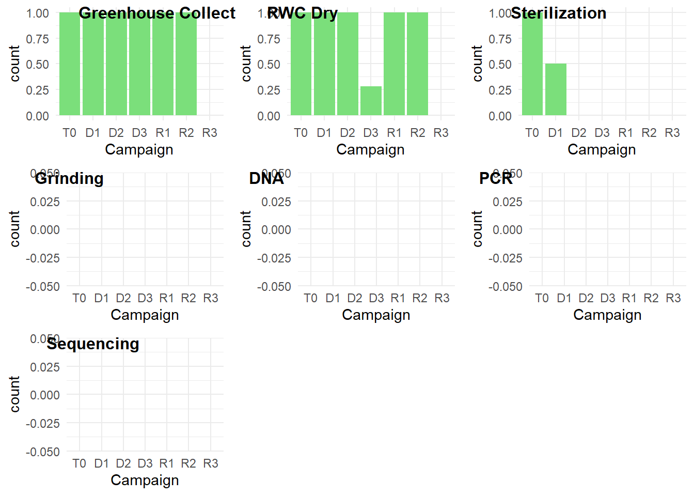
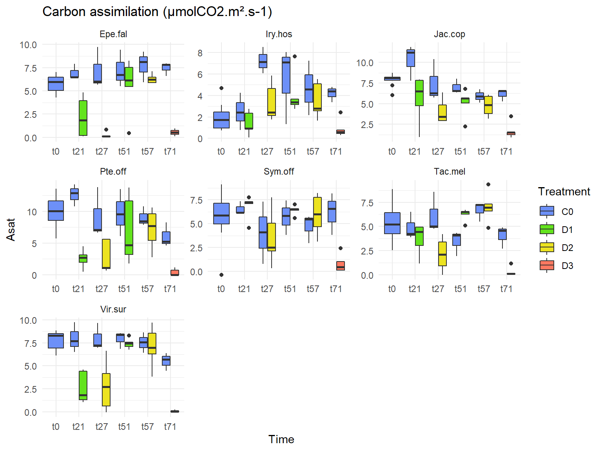
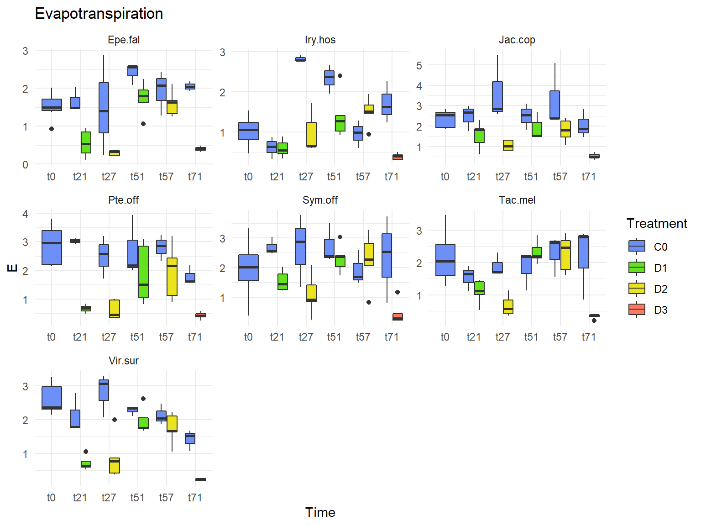

Introduction to the greenhouse experiment
While most research has had a focus on aboveground dynamics, an important unanswered question in the understanding of plant strategies is the extent to which the microbial community contributes to tropical forest functioning. In roots, the beneficial effects of the microbiome, mycorrhizal fungi or Nitrogen-fixing bacteria, are known to promote nutrient and water uptake, stimulate germination, growth and plant fitness under abiotic stress. The challenge is now to analyze how tree-microbiome interactions will affect the resistance (ability to resist and maintain fitness) and the resilience (ability to recover) of plants in a changing environment. Indeed, more frequent and intense drought events are being forecasted over the Amazon Basin. Previous work was mainly focused on terra firme forests, but few studies address the ecophysiological characteristics of seasonally flooded forests. To tackle this knowledge gap, we suggest a two-fold multidisciplinary approach which combines field sampling with a greenhouse experiment. Seedlings will be sampled in seasonally flooded forests located at Paracou in French Guiana. As mechanistic traits are closely linked to species physiological responses to abiotic environments, we will put into correlation the variation of seedlings’ mechanistic traits values with the microbiome. This project is carried out within the framework of the PhD thesis of M. Boisseaux on the relationships between species’ mechanistic traits and their distribution across contrasted habitats in the tropical forests of French Guiana in a context of climate change. It will provide significant insight into the strategies of tropical species to cope with drought and improve our predictions of ecosystem functioning under future climatic regimes.
5.1 ToDo
- check labels
- analyse soil results
- calibrate PSYPRO cables that are missing
- analyze
- write
5.2 Calendar
| Campaign | Greenhouse collect | RWC dry | Sterilization | Grinding | DNA extraction | PCR with tagged primers | Sequencing |
|---|---|---|---|---|---|---|---|
| T0 | 1 | 1.00 | 1.0 | 0 | 0 | 0 | 0 |
| D1 | 1 | 1.00 | 0.5 | 0 | 0 | 0 | 0 |
| D2 | 1 | 1.00 | 0.0 | 0 | 0 | 0 | 0 |
| D3 | 1 | 0.28 | 0.0 | 0 | 0 | 0 | 0 |
| R1 | 1 | 1.00 | 0.0 | 0 | 0 | 0 | 0 |
| R2 | 1 | 1.00 | 0.0 | 0 | 0 | 0 | 0 |
| R3 | 0 | NA | 0.0 | 0 | 0 | 0 | 0 |

<!--chapter:end:11-Greenhouse_Introduction.Rmd-->
# Materials & method {-}
## Study species
We selected 7 species, chosen according to their abundance in SFF and according to *in natura* availability during the wet season of 2021 (January-September 2021).
<table>
<caption>(\#tab:speciesTab)Studied species.</caption>
<thead>
<tr>
<th style="text-align:left;"> Genus </th>
<th style="text-align:left;"> Species </th>
</tr>
</thead>
<tbody>
<tr>
<td style="text-align:left;"> Eperua </td>
<td style="text-align:left;"> falcata </td>
</tr>
<tr>
<td style="text-align:left;"> Iryanthera hostmannii </td>
<td style="text-align:left;"> NA </td>
</tr>
<tr>
<td style="text-align:left;"> Jacaranda </td>
<td style="text-align:left;"> copaia subsp. copaia </td>
</tr>
<tr>
<td style="text-align:left;"> Pterocarpus </td>
<td style="text-align:left;"> officinalis </td>
</tr>
<tr>
<td style="text-align:left;"> Symphonia </td>
<td style="text-align:left;"> globulifera </td>
</tr>
<tr>
<td style="text-align:left;"> Tachigali </td>
<td style="text-align:left;"> melinonii </td>
</tr>
<tr>
<td style="text-align:left;"> Virola </td>
<td style="text-align:left;"> surinamensis </td>
</tr>
</tbody>
</table>
<div class="figure">
<img src="DRYER-project_files/figure-html/speciesPhylo-1.png" alt="Selected" width="768" />
<p class="caption">(\#fig:speciesPhylo)Selected</p>
</div>
## Sampling strategy
Samplings were carried outside the permanent plots of Paracou Station (5°18’N, 52°55’W), a lowland tropical rainforest in French Guiana, South America. The sampling area is characterized
by a rugged landscape formed by the alternation of 40–50 m high hills, slopes and bottomlands, varying in soil drainage type and water table depth (Gourlet-Fleury et al., 2004). Out of the three habitat types, species were only collected in the bottomlands. Bottomlands were described by Ferry et al 2010 with hydromorphic soils and a water table between 0 and 60 cm in depth depending on the season. We opted to sample 1 year-old seedlings as they are easy to access and represent a crucial stage in the establishment of a species. Indeed, the ability of seedlings to survive during drought has been shown to be a key determinant of species distributions for tropical forests (Kursar et al 2009), since the seed-to-seedling transition is where mortality from drought and resource limitation are critical.
**Maps of seedling sampling**:
* [Eperua_falcata](Greenhouse_document/maps/DRYER - Eperua falcata.pdf)
* [Iryanthera_hostmannii](Greenhouse_document/maps/DRYER - Iryanthera hostmannii.pdf)
* [Jacaranda_copaia subsp. copaia](Greenhouse_document/maps/DRYER - Jacaranda copaia.pdf)
* [Pterocarpus_officinalis](Greenhouse_document/maps/DRYER - Pterocarpus officinalis.pdf)
* [Symphonia_globulifera](Greenhouse_document/maps/DRYER - Symphonia globulifera.pdf)
* [Tachigali_melinonii](Greenhouse_document/maps/DRYER - Tachigali melinonii.pdf)
* [Virola_surinamensis](Greenhouse_document/maps/DRYER - Virola surinamensis.pdf)
**Field protocol**:
* [Field_protocol](./3_Protocol/Field.Rmd)

## Greenhouse experiment
After collecting the seedlings, they were immediately brought back to the campus for grounding. Seedlings were then directly transplanted into 4 L pots filled with a sandy substrate composed of a 1:2 mixture of a brown ferralitic clay soil from terra firme forest. Seedlings were pooled in batch, organized by species and GPS position (1 GPS position equaled to 1 mothertree) (see *Field Protocol* for more details). Seedlings were grown in a shadehouse during at least one month and irrigated two times a day (8h and 18h during 5 mins). When the mortality rate was stable, seedlings were then placed into the greenhouse for the experiment according to a randomized block design.


rotate.image(img, angle = 90, compress=NULL)
The daily rainfall recorded by the Sinnamary Weather Station (MétéoFrance) over the past 64 years (1955-2019) enabled us to calculate the annual mean ± SD maximum number of consecutive days without rainfall (detection limit 0.2 mm) in a dry season (August-November): 21 ± 5 days. A decrease up to 30 % in precipitation trend is projected in the Amazon region by 2100 (3). The maximum number of consecutive days without rainfall was 71 days in 1976. We then ask ourselves could an ‘‘extreme’’ event of the past become more common in the future? Drought was induced by completely withholding water. We exposed seedlings to four different watering treatments, followed by a recovery period of one month (21).
1. Well-watered every 2-3 days to field capacity (*Control* (C0))
2. Water withheld during 21 days (*Current-DRY* (D1))
3. Water withheld during 27 days, the projected norm 21 days + 30 % (*Projected-DRY* (D2))
4. Water withheld during 71 days, a rare event (*X-DRY* (D3))
<div class="figure">
<img src="Greenhouse_document/design/CEBA_design.png" alt="Greenhouse design" width="100%" />
<p class="caption">(\#fig:pressure)Greenhouse design</p>
</div>
### Randomized design
A randomized block design is an experimental design where the experimental units are in groups called blocks. The treatments are randomly allocated to the experimental units inside each block. When all treatments appear at least once in each block, we have a completely randomized block design. This kind of design is used to minimize the effects of systematic error. If the experimenter focuses exclusively on the differences between treatments, the effects due to variations between the different blocks should be eliminated.
I used the blocksdesign package for the construction of block and treatment designs:
**blocksdesign::blocks(treatments=list(3,1,1),replicates=list(4,5,3),blocks = 4)**
*4 blocks containing:*
*3 different water treatments repeated 4 times*
*1 control treatment repeated 5 times (they are more individuals for the control group)*
*1 "imaginary" treatment repeated 3 times to have an even design*
The goodness or efficiency of an experimental design can be quantified:
+ *D-effciency*: a function of the geometric mean of the eigenvalues
+ *A-efficiency* : a function of the arithmetic mean of the eigenvalues
Both are based on the idea of average variance, as the variance gets smaller, the efficiencies go lower. **The best design is the one with the highest A- and D- efficiencies**
For the following block and treatment design, I obtained 0.9793704 and
0.9787234 for the A- and D- efficiencies respectively.
Inside each treatment block, I organized the 7 species randomly. Again, 7 is an odd number, so I used an 8th imaginary species to obtain an even design. Example for the control group:
**blocksdesign::blocks(treatments=8,replicates=5,blocks = list(5,2))**
Individuals for each species were then randomly assigned within each species block in order to mix mothertree origin within treatments.
<div class="figure">
<img src="Greenhouse_document/design/DesignMarion.png" alt="Greenhouse design" width="100%" />
<p class="caption">(\#fig:unnamed-chunk-11)Greenhouse design</p>
</div>
We finally were able to have :
<table>
<thead>
<tr>
<th style="text-align:left;"> Family </th>
<th style="text-align:left;"> Genus </th>
<th style="text-align:left;"> Species </th>
<th style="text-align:right;"> Done </th>
<th style="text-align:right;"> Left </th>
<th style="text-align:right;"> Goal </th>
</tr>
</thead>
<tbody>
<tr>
<td style="text-align:left;"> Fabaceae </td>
<td style="text-align:left;"> Eperua </td>
<td style="text-align:left;"> falcata </td>
<td style="text-align:right;"> 136 </td>
<td style="text-align:right;"> 0 </td>
<td style="text-align:right;"> 136 </td>
</tr>
<tr>
<td style="text-align:left;"> Myristicaceae </td>
<td style="text-align:left;"> Iryanthera </td>
<td style="text-align:left;"> hostmannii </td>
<td style="text-align:right;"> 135 </td>
<td style="text-align:right;"> 1 </td>
<td style="text-align:right;"> 136 </td>
</tr>
<tr>
<td style="text-align:left;"> Fabaceae </td>
<td style="text-align:left;"> Jacaranda </td>
<td style="text-align:left;"> copaia </td>
<td style="text-align:right;"> 117 </td>
<td style="text-align:right;"> 19 </td>
<td style="text-align:right;"> 136 </td>
</tr>
<tr>
<td style="text-align:left;"> Fabaceae </td>
<td style="text-align:left;"> Pterocarpus </td>
<td style="text-align:left;"> officinalis </td>
<td style="text-align:right;"> 136 </td>
<td style="text-align:right;"> 0 </td>
<td style="text-align:right;"> 136 </td>
</tr>
<tr>
<td style="text-align:left;"> Clusiaceae </td>
<td style="text-align:left;"> Symphonia </td>
<td style="text-align:left;"> globulifera </td>
<td style="text-align:right;"> 128 </td>
<td style="text-align:right;"> 8 </td>
<td style="text-align:right;"> 136 </td>
</tr>
<tr>
<td style="text-align:left;"> Fabaceae </td>
<td style="text-align:left;"> Tachigali </td>
<td style="text-align:left;"> melinonii </td>
<td style="text-align:right;"> 132 </td>
<td style="text-align:right;"> 4 </td>
<td style="text-align:right;"> 136 </td>
</tr>
<tr>
<td style="text-align:left;"> Myristicaceae </td>
<td style="text-align:left;"> Virola </td>
<td style="text-align:left;"> surinamensis </td>
<td style="text-align:right;"> 136 </td>
<td style="text-align:right;"> 0 </td>
<td style="text-align:right;"> 136 </td>
</tr>
</tbody>
</table>
<img src="DRYER-project_files/figure-html/unnamed-chunk-12-1.png" width="768" />
<!--chapter:end:12-Greenhouse_Materials-Method.Rmd-->
# Traits
This chapter defines measured traits, the organization of the measurements with the associated protocols.
## Soft traits
* **LA**: leaf area $cm^{2}$
* **LDMC**: leaf dry matter content $g.g^{-1}$
* **LT**: leaf thickness ($\mu m$)
* **SLA**: specific leaf area ($g.cm^{-2}$)
* Plant height ($cm$)
* Stem diameter ($cm$)
* Number of leaves
* Number of leaflets : for compound leaves.
* **SRL**: Specific root length ($m.g^{-1}$)
* Root to shoot ratio
* total biomass
* Wilting stage* : D0 non-wilted leaf, D1 slightly wilted, D2 wilted, and D3 severly wilted.
## Hydraulic traits
* **RWC**: relative water content (%) is of special interest as it reflects the amount of water present the leaf relative to the maximum it can hold (*INSERER BIBLIO Barrs & Weatherley 1962*)
* **$\pi_{TLP}$**: leaf water potential at which leaf cells lose turgor (MPa), a key drought tolerance trait.
* **$\phi_{midday}$** : midday leaf water potential (MPa). A measure affected by any cuticular or stomatal transpiration and, thus, broadly captures the integrated effects of plant traits and the environment on the minimum water potential a plant reaches (Giles et al, 2020).
* **$g_{min}$**: leaf minimum conductance $mmol.m^{-2}.s^{-1}$ taking into account water losses through the cuticle and incompletely closed stomata.
* **Stomatal characteristics (size, density)**: morphological characteristic at the crossroads between water loss and the maximum rate of photosynthesis.(*INSERER BIBLIO Julio V. Schneider 2016*)
* **Nervation density**: determining the capacity of water supply in leaves. (*INSERER BIBLIO Julio V. Schneider 2016*)
* Leaf chemistry : To assess the leaves' concentration in carbon, nitrogen and phosphorous.
## Photochemical trait
* **$\frac{Fv}{Fm}$**: maximum quantum yield of photosystem II, which reflects photosynthesis efficiency ($\mu mol . m^{-2} . s^{-1}/ \mu mol . m^{-2} . s^{-1}$). It is an indicator of photosynthetic performance, as it has been shown to be sensitive to drought constraints in tropical forests (*INSERER BIBLIO Manzi et al 2021*) but decline after other leaf hydraulic traits (*INSERER BIBLIO Trueba et al 2019*).
* **Chlorophyll content**:
* **$A_{sat}$**:
## Microbial analyses : bacteria + fungi leaf and root endophytes
* Leaf and root surface-sterilization, storage -20°C
* Leaf and root DNA extraction (high-throughput sequencing of amplicons)
* PCR with tagged primers and sequencing performing with illumina miSeq and paired technology to obtain reads: Since fungi were shown to be more tolerant than bacteria to water stress (*INSERER BIBLIO Preece 2019*) we will then focus on fungi and in the leaves to unveil any potential corrolations with the leaves' measured traits.
* Use of OBITools + metabaR packages (pair-end assembly, read assignment, read dereplication, taxonomic assignment, chimera detection, sequence clustering)
* Goal: relate MOTUs to taxonomic names and search for functional guilds.
## Protocols
* [**$\pi_{TLP}$** protocol](../3_Protocol/Protocole_Ptlp.pdf)
* [**RWC** protocol](../3_Protocol/RWC_Boisseaux.docx)
* [**Stomata** protocol](../3_Protocol/Analyse Stomates_Marion.docx)
* [**FvFm** protocol](../3_Protocol/Fluo_Bellifa.docx)
* [**gmin** protocol](../3_Protocol/Gmin protocol.docx)
* [**leaf venation** protocol](../3_Protocol/ProtocolLeafVeins_MB_2.docx)
* [**Surface-sterilization for isolation of endophytes** protocol](../3_Protocol/Sterilisation.docx)
<!--chapter:end:13-Greenhouse_Traits.Rmd-->
# Results
## All individuals
### Seedling heights
<img src="DRYER-project_files/figure-html/unnamed-chunk-13-1.png" width="768" />
Quick lookout: pteoff at t21 days??
### Stem diameter
<img src="DRYER-project_files/figure-html/Stem diameter-1.png" width="768" />
### Number of leaves
## Wilting stages
Link to indesign document
# Non Destructive
## $\frac{Fv}{Fm}$
5.3 Warning: Removed 3 rows containing non-finite values (stat_boxplot).
<div class="figure">
<img src="DRYER-project_files/figure-html/measureFvFm-1.png" alt="$\frac{Fv}{Fm}$." width="768" />
<p class="caption">(\#fig:measureFvFm)$\frac{Fv}{Fm}$.</p>
</div>
## Asat
5.4 Warning: Removed 3 rows containing non-finite values (stat_boxplot).
```

5.5 E
